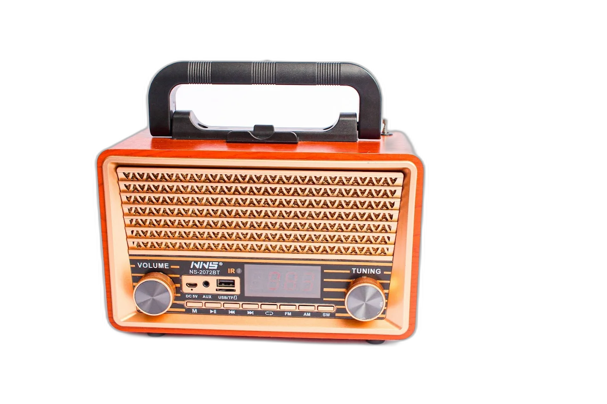
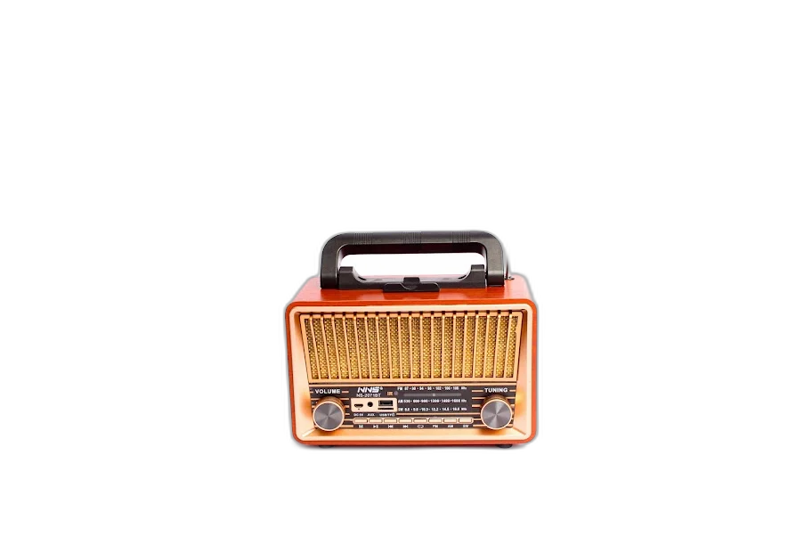
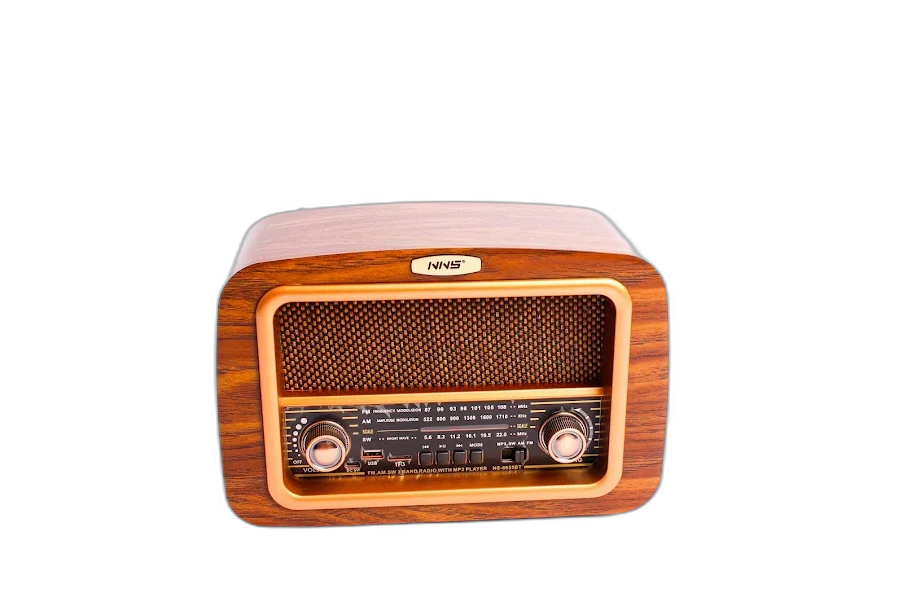
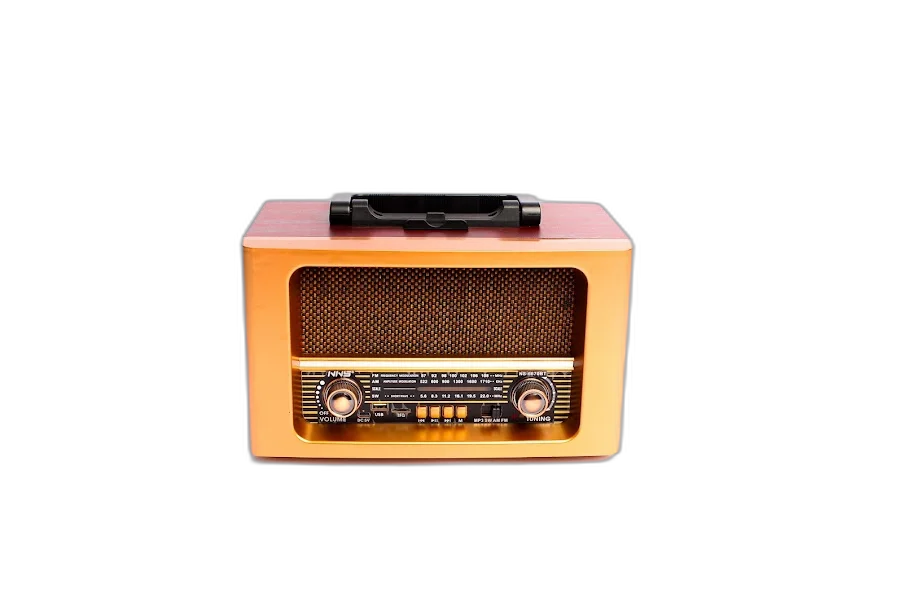

17 Modelos Disponíveis
Rádios solares, retrô, vintage, convencionais e caixas de som com Bluetooth, USB e muito mais.

FS-8215 — 2000W
TWS · Bluetooth · LED · USB · Bateria Recarregável · FM · Microfone Sem Fio · Controle Remoto

FS-383 — 1800W
TWS · Bluetooth · LED · USB · Bateria Recarregável · FM · Microfone Sem Fio · Suporte para Celular · Controle Remoto

FS-1068 — 800W
TWS · Bluetooth · LED · USB · Bateria Recarregável · FM · Microfone Sem Fio · Controle Remoto · Apoio para Celular

FS-1033 — 230W
Bluetooth · LED · USB · Bateria Recarregável · AM & FM · Microfone com Fio · Controle Remoto · MP3 Player

FS-8076 — Rádio de Madeira
AM & FM · USB & TF · SW · Entrada Auxiliar · MP3 Player · Bluetooth · TWS · Controle Remoto

FS-8075 — Rádio de Madeira
AM & FM · USB & TF · SW · Entrada Auxiliar · MP3 Player · Bluetooth · TWS · Controle Remoto

FS-2073 — Rádio de Madeira
AM & FM · USB & TF · SW · Entrada Auxiliar · MP3 Player · Bluetooth · TWS · Controle Remoto

FS-2072 — Rádio de Madeira
AM & FM · USB & TF · SW · Entrada Auxiliar · MP3 Player · Bluetooth · TWS · Display Digital · Controle Remoto

FS-2071 — Rádio de Madeira
AM & FM · USB & TF · SW · Entrada Auxiliar · MP3 Player · Bluetooth · TWS · Controle Remoto

FS-6655
Bluetooth · USB & TF · AM/FM/SW · TWS · Bateria Recarregável

FS-1631 — 3W
MP3 Player · SW · USB & TF · Bluetooth · Bateria Recarregável · Bivolt · AM & FM · Alça para Transporte · Lanterna

FS-6670 — Rádio de Madeira
AM & FM · USB & TF · SW · Entrada Auxiliar · MP3 Player · Bluetooth · Controle Remoto

FS-1925 — Solar
Placa Solar · AM & FM · SW · Entrada Auxiliar · USB & TF · MP3 Player · Bluetooth

FS-103 — Solar
Lanterna · MP3 Player · AM & FM · Rádio 8 faixas · USB & TF · Painel Solar · Bateria Recarregável · Bluetooth · Cordão

FS-1587 — Solar
MP3 Player · AM & FM · Rádio 8 faixas · USB & TF · Painel Solar · Bateria Recarregável · Bluetooth · Cordão

FS-100BT
Lanterna · MP3 Player · AM & FM · Rádio 9 faixas · USB & TF · Bivolt · Bateria Recarregável · Bluetooth · Cordão

FS-3051
AM & FM · Antena Direcional · LED · Pilhas AA · Entrada para Fones · Visor Analógico · Portátil · Cordão